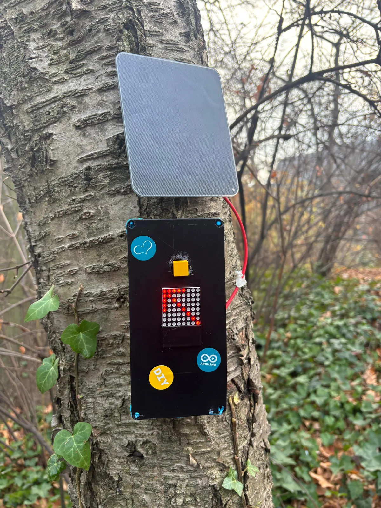
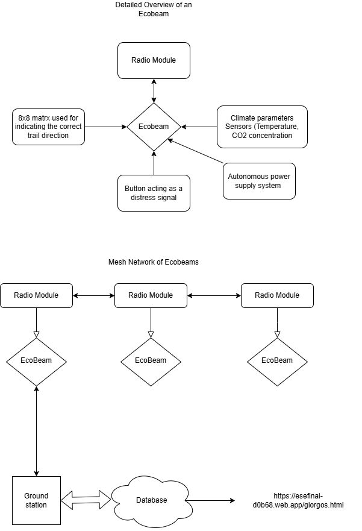

EcoBeam
Sustainable embedded systems · mesh networking
A solar-powered trail node, co-developed by a three-person team, that shows direction locally, records environmental data, and sends status through radio-linked nodes. The prototype combines an 8 × 8 LED matrix, sensors, solar power, and a distress button.

Overview
A trail node has to work where there is no mains power and no network. Each EcoBeam carries its own solar supply and links to its neighbors by radio rather than to infrastructure. A node points users with an 8 × 8 LED matrix, collects temperature and CO₂ data, and sends status information over that radio link. A distress button gives the field node a direct emergency input.
System architecture

Core features
- Uses an 8 × 8 LED matrix to indicate trail direction or local status at the node.
- Logs temperature and CO₂ from onboard sensors.
- Uses radio modules so EcoBeam nodes communicate as a distributed mesh network; the mesh worked in testing.
- Includes a distress button to provide an emergency signal from the field node.
- Runs off a solar panel and its onboard power supply, aiming at unattended operation.
Prototype
My contribution
- Designed the CAD enclosure that houses the node electronics, front-panel LED matrix, and distress button.
- Implemented the information and distress modes, including message routing and acknowledgments between radio-linked nodes.
- Co-built, mounted, and tested the solar-powered field prototype.
Built with teammates Dimitris Deliakidis and Juan Andres Miguel.